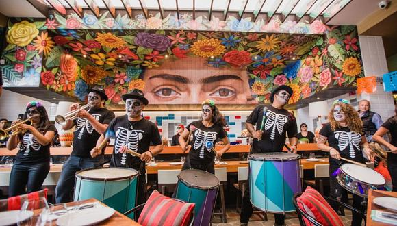

Sobre nosotros
Somos un restaurante familiar de comida mexicana, preparamos nuestra comida de manera muy especial para cada uno de nuestros clientes, siempre siguiendo protocolos de sanidad y calidad.Nuestra historia comienza con nuestro fundador Juanito Perez quien es originario de Tamaulipas pero a la edad de 18 años y con ganas de superarse decicio venirse a vivir a la cuida de Monterrey Nuevo León, donde conocio a su esposa Maria Martínez con la cual decidio abrir su primer restaurante en el centro de Monterrey.
Tiempo despues su negocio rindio fruto y decidieron crear otra sucursal para así poder llevar estos bellos platillos muchas más familias
|
Fotografía del fundador, Juanito murio a los 65 años en Monterey junto s su familia. |
|---|
Acualmente el señor Perez ha muerto y sus hijos y nietos junto con su viuda son los que administran el negocio. Este legado continua y sigue siendo prospero incluso más cada día, ahora este restaurante se encuentra en distintas cuidades de la Republica Méxicana como: Reynosa, cuidad natal de Juanito Perez, Morelia, Guadalajara, Los mochis, Cabo San Lucas, Ciudad Valle, Ensenada, Maztlan entre otras, ademas de contar con 3 sucursales en Monterrey
|  |
|---|